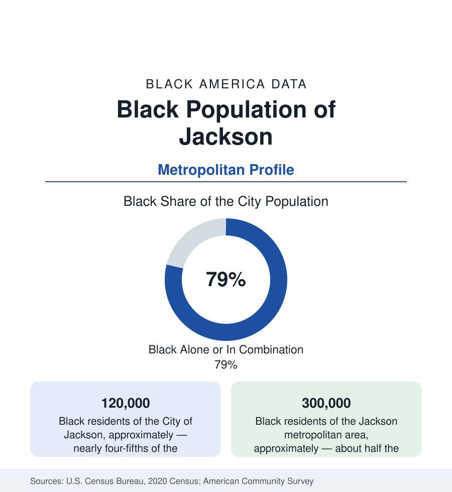

Black Cities
Black Jackson: Mississippi's Majority-Black Capital
Jackson is nearly four-fifths Black — the most heavily Black state capital in America — with about 300,000 Black residents across its metro. The census profile.

Jackson, Mississippi's capital, is the most heavily Black state capital in America: about 120,000 Black residents, roughly four-fifths of the city's 154,000 people, with the metropolitan area's Black population at about 300,000 — a majority or near-majority of the metro itself. Jackson's data describe Black political and institutional self-governance at full municipal scale, inside the state with the nation's largest Black population share, against the hardest infrastructure and fiscal indicators of any capital profile in this section.
Farish Street and the Capital's Districts
Black Jackson's historic center was Farish Street — the commercial district that by the early twentieth century was among the South's great Black business streets, its blocks holding the offices, theaters, and the Alamo Theatre's marquee — declined through the mall era and a half-century of stalled redevelopment plans, now in its latest revival attempt. The residential geography spread from the Farish core: the west and south districts (the city's mass), Georgetown and Virden Addition (among the South's early Black suburbs of professionals), the Jackson State corridor in the southwest, and the county's suburban ring (Byram, Clinton, Flowood, Brandon — Rankin County across the Pearl River being the metro's white suburban shore, one of the starkest municipal color lines in the section's data). Tougaloo College, the private HBCU founded in 1869, sits at the city's northern edge, its campus a civil-rights-era landmark; Jackson State University, the public HBCU enrolling in the range of seven to eight thousand, anchors the southwest as the city's second downtown.
The Governance Data
Jackson has elected Black mayors since 1997 and Black council majorities for longer — a generation of Black municipal governance whose record the data grade without sentiment: the city's population has fallen by tens of thousands from its peak (white and Black middle-class flight to the ring), its tax base is the state's most stressed among major cities, and its infrastructure indicators — the water system's 2022 failure, when the capital city of an American state lost reliable running water for weeks and the federal government intervened — are the file's national headlines. The water crisis's data trail (decades of deferred maintenance, the billing system's collapse, the state's and city's fiscal relationship) is documented in the federal filings as the extreme case of the legacy-city infrastructure ledger. Against it, the governance record's other column: the school district's state-takeover-and-return cycle and its grade improvements, Jackson State's growth, the medical district (the University of Mississippi Medical Center is the state's academic health center and among its largest employers) — a capital whose institutions are stronger than its balance sheet.
Economy and Indicators
The employment structure is the state-capital pattern under maximum fiscal strain: state government, UMMC and the hospitals, Jackson State and the schools, the military installations' edge, and a private sector (Nissan's Canton plant up the interstate — a transformative Black-employing factory in Madison County — logistics, the remaining manufacturing) that suburbanized to the ring. The indicators split by the river and the county line in the section's purest form: city medians at the floor of the capital set; Rankin and Madison counties' Black suburbanites posting the metro's strong numbers; Hinds County — majority-Black, holding the city and its suburbs together in one county — recording the blend. Poverty in the city runs at the highest rates of any profile here, against a homeownership base in the west and south districts that is the community's ballast.
Change and the Estimates
The estimates show the metro stable in total — suburban Black growth in Madison and Rankin offsetting the city's slow decline — with the water system's federal receivership and rebuilding the decade's defining project and its progress reports a data series of their own. The cultural layer (the Mississippi Civil Rights Museum, opened 2017 beside the state museum — the nation's boldest state-built civil rights institution — Farish Street's revival attempts, the JSU Sonic Boom's cultural economy) builds the heritage file on the Farish generation's ground. The youth data complete the circle: Jackson's schools educate a student body over 95 percent Black, the most complete Black educational ecosystem of any capital, its outcomes the state profile's central file.
Reading the Jackson Numbers
Jackson is the self-governance profile: a Black capital city, four-fifths Black, running itself for a generation inside America's Blackest state — and its data refuse both easy stories, holding institutional strength and infrastructural failure, civic pride and fiscal collapse, in the same tables. What Black municipal power can and cannot do against a hostile fiscal structure is being measured here, in the open, year by year.
More in Black Cities
Black Atlanta: Population, Distribution, and Growth of a Black Metropolis
Metro Atlanta holds more than two million Black residents — roughly one in three, second only to New York. The suburban distribution, migration history, and composition of Black Atlanta in the census data.
Black New York: The Largest Black Population in America
The New York metropolitan area holds about 3.4 million Black residents — more than any metro in the nation — and the city itself about two million. The census profile.
Black Washington: The District and the Metro
The Washington metro holds about 1.6 million Black residents, and the District itself — long a majority-Black city — now records a Black share near 41 percent. The census profile.
Source: U.S. Census Bureau, 2020 Census; American Community Survey; Population Estimates Program.